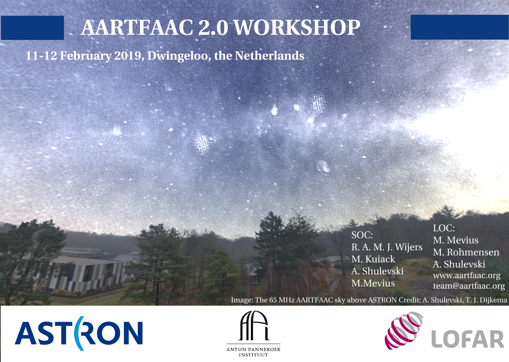

We have built and are operating an add-on facility to LOFAR called AARTFAAC. Its purpose is to monitor the full sky over Exloo in low LOFAR low band (~30-80 MHz) at cadences as high as 1 image/second in order to search for bright, short-duration transients. AARTFAAC now routinely operates in its default configuration using the six LOFAR super-terp stations (A6), as well as in its full mode using additional six stations closest to the super-terp (A12). Feedback from collaborators as well as the wider community underlines the many varied applications of AARTFAAC in its present form. Extending the system further, may be useful to quite a few of our colleagues.
In order to present AARTFAAC's current capabilities to a select group of colleagues and solicit ideas on how to proceed towards AARTFAAC 2.0 we will hold a small workshop (up to 30 participants). The goal is fourfold:
We are in the process of putting together documentation and other materials that describe the current state and capabilities of AARTFAAC. We invite interested parties to join us; please send a brief expression of interest to team@aartfaac.org, in which you indicate what topics you would like to bring to the meeting for discussion. We hope to be able to accommodate as many interested colleagues as possible, however the discussion format of the workshop may require us to perform some selection.
Route to Venue